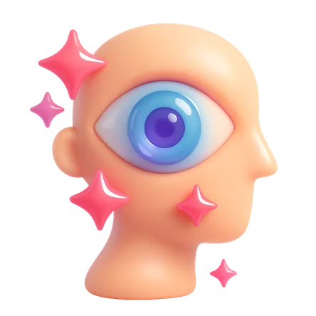

Do you consider yourself a spiritual person?
Are you familiar with the concept of Psychic Artistry?
We have noticed something shocking while searching for your Soulmate. Prepare for surprising results!
We don’t share any personal information